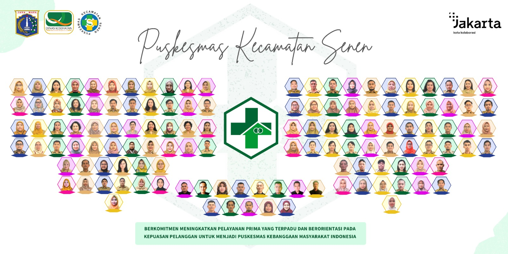

KANIA WULANDARI - 11210251000047 - 5A IPI
SELAMAT DATANG DI WEBSITE RESMI
PUSKESMAS KECAMATAN SENEN
Website ini dibuat untuk mengenalkan Puskesmas Kecamatan Senen kepada masyarakat luas.
Berisi berbagai macam informasi terkait baik pelayanan maupun kegiatan yang ada di Puskesmas Kecamatan Senen.
Yuk simak Cuplikan Singkat tentang Puskesmas Kecamatan Senen di bawah ini!
Mewujudkan Kecamatan Senen sehat dan menjadikan Puskesmas terbaik kebanggaan masyarakat Jakarta
| JADWAL PELAYANAN | JENIS-JENIS PELAYANAN |
|---|---|
| Senin - Jumat 07.30 - 14.30 WIB |
|
| Rabu 07.30 - 14.30 WIB |
|
| Selasa & Rabu 07.30 - 14.30 WIB |
|
| Senin, Kamis, & Jumat 07.30 - 14.30 WIB |
|
| Senin - Kamis 07.30 - 14.30 WIB |
|
| Senin, Selasa, Kamis, Jumat 07.30 - 14.30 WIB |
|
Saat ini Puskesmas Kecamatan Senen melayani pendaftaran online. Silahkan isi form di bawah ini!
Apabila sudah selesai mendaftar, pastikan untuk memberitahu ke petugas pendaftaran agar bisa di proses lebih lanjut.